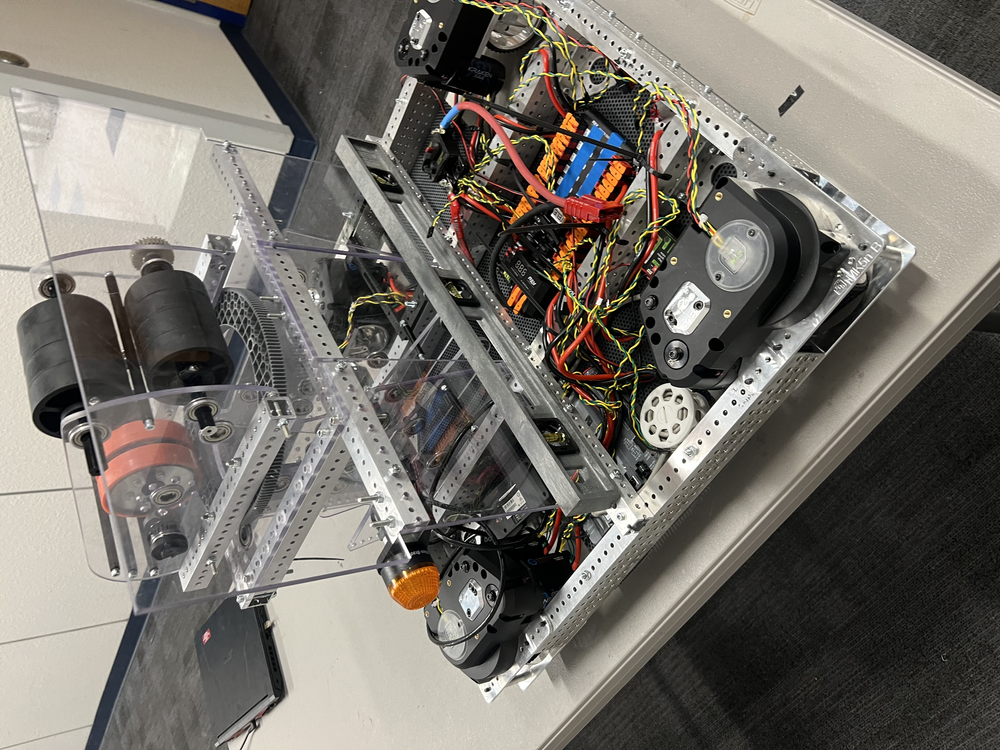

Relevant Skills and Experience
Throughout competing in robotics competitions in state and at the World Championships, I developed skills in mechanical design, electrical design, and programming. I also learned how to work in a team environment and how to manage a project from start to finish.

Programming and Other Technical Skills
- Verilog and VHDL
- x86 Assembly
- SolidWorks
- Revit
- Full Stack - HTML, CSS, JavaScript, Python, React, Node.js
- Python
- Machine Learning
- Godot Game Engine
MEP
Apart from robotics, I also have experience in MEP (Mechanical, Electrical, and Plumbing) design. I have designed single line electrical systems and mechanical systems for residental buildings. Furthermore, I've designed a car gear box in SolidWorks and made 3D prints and CNC milled parts of tools to assist my father in his work as a Casino Technician and a Dental Technician.